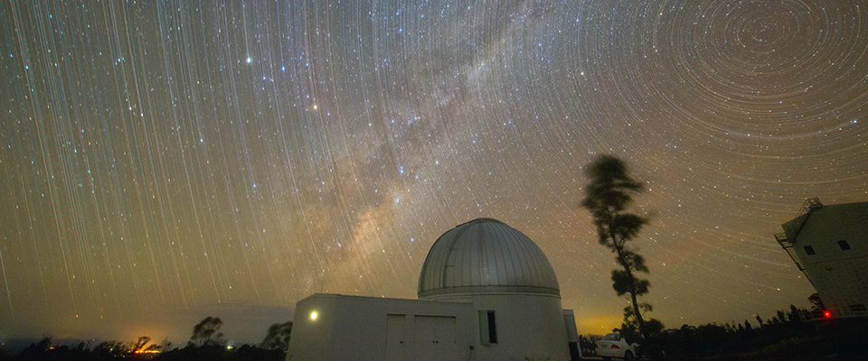
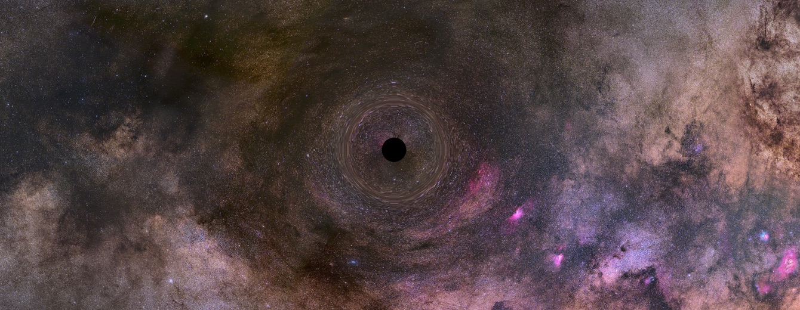
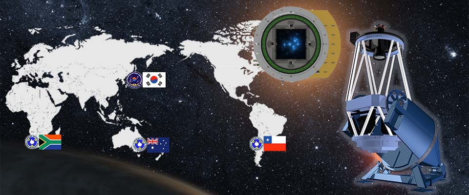
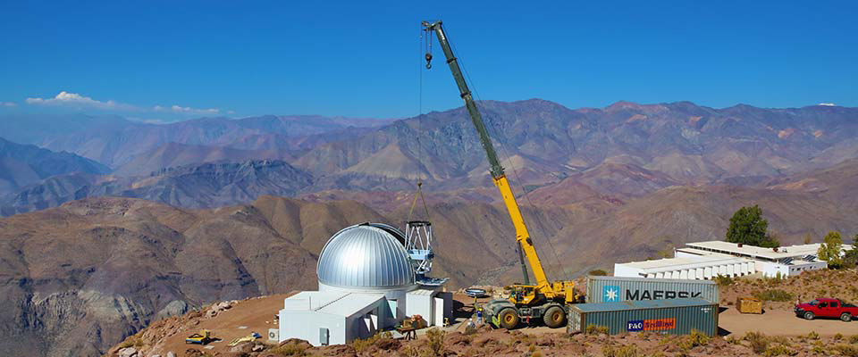

Executive Summary
오하이오주립대의 앤드루 굴드가 2026년 8월 26일 arXiv에 올린 논문은 망원경을 새로 쓰지 않습니다. 한국천문연구원이 남반구 세 곳에서 돌려 온 KMTNet이 2016년부터 2026년까지 쌓아 둔 마이크로렌징 기록을 그대로 두고, 그 기록으로 홀로 떠도는 블랙홀의 질량을 어디까지 정밀하게 잴 수 있는지를 계산했습니다.
답은 아인슈타인 반경 오차 0.5밀리초각입니다. 다만 이 값은 가장 촘촘히 관측된 약 12제곱도에서만 나오고, 그 바깥 28제곱도에서는 두 배로 벌어집니다. 관측 대상이 달라서가 아니라 그 하늘을 얼마나 자주 찍었느냐가 달라서 갈리는 차이입니다. 그리고 이 숫자 전체에 조건이 하나 붙습니다. 지상 관측 특유의 계통 오차가 통제된다는 가정입니다.
그래서 이 계산은 두 가지를 한꺼번에 묻습니다. 저 숫자가 성립하려면 어떤 조건이 갖춰져야 하는가, 그리고 10년 전 외계행성을 찾으려고 설계된 수집 체계가 전혀 다른 질문에 답하려면 무엇이 보존돼 있어야 했는가.
주요 수치
앞의 두 숫자는 이 계산이 무엇을 할 수 있다고 보는지를, 뒤의 두 숫자는 그 계산이 어떤 바닥 위에 서 있는지를 보여 줍니다. 25년 동안 실적은 한 건이고, 후보를 골라내는 데 필요한 데이터 재처리는 아직 한 해 분량만 끝나 있습니다.
출처: Gould, A. (2026), arXiv:2608.26399 · Segev 외(2026) MNRAS 546, 1
0.5 mas
아인슈타인 반경 오차
가장 촘촘히 관측된 약 12제곱도 기준, 계통 오차 통제를 가정한 값
10 mas
개별 관측 한 번의 산포
Segev 팀 파일럿이 I=18등급 별에서 얻은 값, 이 계산의 입력
1건
질량이 확정된 고립 블랙홀
마이크로렌징 이벤트 5만 건 이상 중 OGLE-2011-BLG-0462 하나
2023년
재환원이 끝난 유일한 해
후보 선별에 필요한 TLC 재환원이 대규모로 적용된 분량
망원경 시간을 한 시간도 쓰지 않았다
굴드의 논문은 관측 결과를 보고하지 않습니다. 새 별을 찍지도, 새 이벤트를 발견하지도 않았습니다. 대신 피셔 분석이라는 방법을 씁니다. 측정을 하기 전에 관측 조건만 놓고 오차가 얼마나 될지를 미리 계산하는 방식입니다. 관측 횟수, 관측 시점의 분포, 한 번 잴 때의 정밀도를 넣으면 최종적으로 알고 싶은 값의 오차가 나옵니다.
그러니까 이 논문이 내놓은 것은 발견이 아니라 지도에 가깝습니다. 이미 존재하는 KMTNet 아카이브를 놓고 어느 영역에서 어느 정도까지 잴 수 있는지를 표시한 지도입니다. 저자는 오하이오주립대 천문학과의 앤드루 굴드 한 사람이고, 논문은 8월 26일 제출된 프리프린트라 아직 학술지 심사를 거치지 않았습니다.
이 계산이 가능해진 계기는 따로 있습니다. Segev, Ofek, Shvartzvald 등이 2026년 MNRAS에 발표한 파일럿 연구입니다. 이들은 KMTNet의 10년치, 약 100제곱도짜리 지상 관측 데이터베이스에서 별의 위치 변화를 시계열로 뽑아내는 파이프라인을 처음 시도했고, 실제로 쓸 만한 정밀도를 얻었습니다. 굴드는 그 정밀도를 입력값으로 받아 계산을 얹었습니다. 관측 기법은 Segev 팀의 것이고, 그것으로 무엇을 할 수 있는지의 계산이 굴드의 몫입니다.
논문의 초록은 마지막 문장에서 목표를 밝힙니다. 광도곡선 탐색과 위치추적 탐색을 결합해, KMTNet 데이터베이스 안에서 고립 블랙홀을 골라내고 그 질량과 거리를 재는 실무 절차를 제시하겠다고 적었습니다.

25년 동안 확인된 고립 블랙홀은 하나
동반성 없이 홀로 떠도는 블랙홀은 빛을 내지 않습니다. 주변에서 빨아들일 물질도 없으니 X선도 나오지 않습니다. 이런 천체를 찾아내는 방법으로 알려진 것은 마이크로렌징 하나뿐입니다. 블랙홀이 먼 배경별 앞을 지나갈 때 중력이 빛을 휘어 별이 잠시 밝아지는 현상입니다.
굴드 자신이 2000년에 마이크로렌징 이벤트의 약 1%가 블랙홀 때문일 것이라고 예측했습니다. 그로부터 25년이 지났고 알려진 이벤트는 5만 건을 넘었는데, 정체가 분명하게 확인된 고립 블랙홀은 아직 하나입니다. OGLE-2011-BLG-0462입니다.
하나뿐인 이유는 질량을 확정하려면 서로 다른 두 값을 동시에 재야 하기 때문입니다. 하나는 아인슈타인 반경으로, 렌즈가 하늘에 그리는 고리의 각크기입니다. 다른 하나는 마이크로렌징 시차로, 지구가 공전하며 시점을 바꿀 때 광도곡선에 남는 미세한 흔들림에서 나옵니다. 두 값을 알면 질량과 거리가 함께 결정됩니다.
둘 중 시차는 형편이 나은 편입니다. 이벤트를 발견하는 데 쓰는 바로 그 광도곡선에서 직접 잴 수 있고, 특히 오래 지속되는 이벤트에서 잘 나옵니다. 다만 낫다는 말이 쉽다는 뜻은 아닙니다. 블랙홀은 무겁기 때문에 이벤트가 오래 지속되지만, 바로 그 무거움이 시차를 작게 만들어 정확히 재기 어렵게 합니다. 은하 벌지 안쪽에 있는 블랙홀은 특히 그렇습니다. 굴드는 지상 서베이 자료를 파이프라인으로 환원한 값만 가지고 수백 건에서 믿을 만한 연간 시차가 기계적으로 쏟아져 나오기를 기대할 수는 없다고 적었습니다. 그래도 진짜 벽은 아인슈타인 반경 쪽입니다. 지금까지 이 값이 측정된 이벤트는 100건이 넘지만, 압도적 다수가 유한광원 효과라는 하나의 경로를 통해서였습니다. 배경별이 렌즈 구조의 특정 지점을 정면으로 통과할 때 광도곡선이 일그러지는 현상인데, 이런 구조는 주로 쌍성 렌즈에서 생깁니다. 행성 이벤트가 대표적입니다.
고립된 렌즈는 사정이 다릅니다. 이 구조가 점 하나로 줄어들어, 배경별이 그 점을 정확히 밟고 지나갈 확률이 배경별 반지름과 아인슈타인 반경의 비율만큼으로 떨어집니다. 블랙홀처럼 아인슈타인 반경이 큰 렌즈에서는 그 값이 1000분의 1 이하입니다. 아인슈타인 반경이 클수록 잴 확률은 오히려 낮아지는 구조입니다.
그래서 다른 길이 열렸습니다. 하나는 허블우주망원경 같은 고해상도 망원경으로 배경별의 위치가 미세하게 밀리는 것을 직접 추적하는 방법입니다. OGLE-2011-BLG-0462가 이 길로 확인됐습니다. 렌즈까지의 거리가 1.5킬로파섹 남짓으로 유난히 가깝고 질량도 태양의 8배 정도로 특별히 무겁지 않아 시차가 0.095로 비교적 크게 나온 조건이었는데도, 그 시차 하나를 정확히 재는 데 상당한 공이 들었고 위치추적 시계열은 10년을 채워야 했습니다. 다른 하나는 간섭계로 두 상을 직접 분리하는 방법인데, 2001년에 제안된 뒤 어두운 광원을 잡을 만큼 장비가 민감해지기까지 25년이 걸렸습니다.

외계행성을 찾던 망원경이 남긴 10년
KMTNet은 블랙홀을 재려고 지은 설비가 아닙니다. 한국천문연구원이 2009년 1월에 시작한 이 사업의 목표는 공식 소개문에 그대로 적혀 있습니다. 마이크로렌징으로 외계행성을 찾는 것, 특히 생명체 거주가능 영역에 있는 지구질량 행성을 검출하는 것입니다.
그 목표에 맞춰 설계된 것이 세 대륙 배치입니다. 지름 1.6미터짜리 동일 규격 망원경 세 대를 경도가 크게 다른 남반구 세 곳에 놓았습니다. 칠레 CTIO에 2014년 5월, 남아프리카공화국 SAAO에 8월, 호주 SSO에 11월 순서로 들어갔습니다. 한 곳이 낮이면 다른 곳이 밤이니, 은하 중심부의 벌지를 밤낮 끊기지 않고 감시할 수 있습니다. 카메라 한 대의 시야는 가로세로 2도씩 4제곱도이고, 벌지 관측 시즌은 2월 20일부터 10월 22일까지로 전체 관측 시간의 46% 정도를 씁니다.

Segev 팀이 손을 댄 것이 바로 이 기록입니다. 이들의 접근은 개별 이벤트를 하나씩 들여다보는 방식이 아니었습니다. 아주 많은 별에 대해 위치추적 시계열을 한꺼번에 만들어, 광도곡선과 무관하게 블랙홀 후보를 찾을 수 있게 하자는 것이었습니다. 칠레 CTIO 자료를 대상으로 알고리즘을 돌린 결과, 별이 비교적 덜 붐비는 BLG17 관측장에서 I=18등급 별 상당수에 대해 산포 10밀리초각(mas)을 얻었습니다.
그렇다면 I=18등급은 어떤 별일까요. KMTNet 관측장의 통상적인 성간 소광을 감안하면 광도가 낮은 거성에 해당합니다. 마이크로렌징 통계를 지배하는 전향점 별들보다는 확실히 드물지만, 그렇다고 희귀하다고 할 정도는 아닙니다.
12제곱도와 28제곱도로 갈리는 정밀도
굴드의 계산에 들어가는 미지수는 여섯 개입니다. 배경별의 위치 두 개, 고유운동 두 개, 아인슈타인 반경, 그리고 렌즈가 지나가는 방향입니다. 관측 한 번마다 가로세로 위치 두 값이 들어오고, 한 값의 정밀도는 Segev 팀이 얻은 10밀리초각으로 고정합니다. 이 정보를 다 넣고 행렬을 뒤집으면 아인슈타인 반경의 오차가 나옵니다.
여기서 관측 스케줄이 결정적입니다. 카덴스가 시간당 4회로 잡혀 있는 약 12제곱도 영역에서 관측은 하지를 낀 40일 동안 하루 40회로 유지되다가, 그 앞 105일과 뒤 95일에 걸쳐 하루 6회까지 선형으로 줄어듭니다. 240일짜리 시즌에 명목상 연 6200회입니다. 실제로는 날씨와 장비 문제로 통상 4800회가 되고, 굴드는 달이 밝은 밤까지 포함해 모든 조건에서 자료를 받는 KMTNet의 특성을 감안해 쓸 만한 관측을 연 4000회로 한 번 더 낮춰 잡았습니다.
이 조건에서 나온 값이 아인슈타인 반경 오차 0.5밀리초각입니다. 1도를 720만으로 나눈 각도이고, 서울에서 부산에 놓인 0.8밀리미터짜리 점을 구분하는 정도입니다. 논문의 식으로 태양질량 10배짜리 블랙홀이 시차 0.05로 지나갈 때 아인슈타인 반경은 4.1밀리초각이니, 재려는 대상에 견주면 0.5밀리초각은 그 12% 남짓입니다. 그리고 다른 관측장에는 배율 하나가 붙습니다. 시간당 4회를 그 관측장의 카덴스로 나눈 값의 제곱근입니다. 오차가 두 배가 되는 28제곱도는 곧 카덴스가 4분의 1인 하늘입니다.
같은 블랙홀이 같은 밝기의 별 앞을 지나가더라도, 그 일이 하늘의 어느 좌표에서 벌어졌느냐에 따라 잴 수 있는 정밀도가 두 배 차이 납니다. 대상의 성질이 아니라 10년 전에 정해 둔 관측 계획이 그 차이를 만듭니다.
이 숫자들에는 저자가 직접 못 박아 둔 전제가 붙습니다. 지상에서 대기를 통해 보는 관측은 여전히 계통 오차를 아주 많이 겪고, 위의 정밀도는 그 오차가 통제된다는 가정 위에서만 성립합니다. 초록의 해당 대목입니다.
“Seeing-limited ground-based observations still suffer from a great deal of systematics, but under the assumption that these systematics can be controlled, I find that with this nominal precision, the Einstein radius can be measured with errors σ(θE) ~ 0.5 mas in the most intensively monitored fields (~12 deg2), and hence to twice that value in an additional ~28 deg2 area.”
Gould, A. (2026), arXiv:2608.26399v1, Abstract
전제는 하나 더 있습니다. 이 계산은 블렌딩을 무시합니다. 관측 화소 안에 다른 별의 빛이 섞여 들어가 위치 측정을 흐리는 현상인데, I=18등급 부근의 광원에서는 무시해도 되는 1차 근사라는 것이 저자의 설명입니다. 이 밝기의 별은 주변에 비슷한 밝기는 물론 몇 배 어두운 별까지도 밀도가 낮아, 경험적으로 대개 블렌딩이 약하게만 걸립니다. 다만 저자는 곧바로 단서를 답니다. 개별 사례에서는 블렌딩이 중간 정도의 문제일 수도, 심지어 심각한 문제일 수도 있으니 반드시 사례마다 확인해야 합니다.
저자는 자기 계산이 어디서 멈추는지도 적어 두었습니다. 개별 이벤트에서 도달할 수 있는 정밀도에는 분명 바닥이 있을 것이고 그 바닥은 별의 밀도에서 올 가능성이 있는데, 그것이 어디인지는 계산으로 알 수 없고 사례마다 계통 오차를 최소로 줄여 보는 실무 작업을 통해서만 확인된다고 했습니다. 그렇다고 가정이 통째로 공중에 떠 있는 것은 아닙니다. Segev 팀이 얻은 위치 오차의 파워 스펙트럼이 대체로 평평했다는 점을 굴드는 각주에 적어 두었습니다. 관측과 관측 사이에 오차가 서로 끌려다니지 않도록 실무에서 붙들어 둘 수 있다는 정성적 근거입니다.
저자가 지루하다고 부른 결과
계산을 여러 조건에서 돌려 본 결과 중 저자가 가장 눈에 띈다고 꼽은 것은 결과가 얼마나 지루한가였습니다. IV장 첫 문장이 “What is most striking about the results reported in Section III is how boring they are”입니다.
지루함은 두 군데에서 나옵니다. 첫째는 시점입니다. 블랙홀 후보의 전형적인 지속시간인 60일짜리 이벤트를 기준으로 2016년부터 2026년까지 어느 시점에 최대 밝기를 찍든, 아인슈타인 반경의 오차는 0.4밀리초각 근처에서 거의 평평했습니다. 예외는 코로나19로 1년을 쉰 2020년과 관측 구간의 양 끝뿐입니다. 그마저도 2020년에 최대 밝기를 찍은 이벤트의 오차는, 그해 관측이 하나도 없다고 놓고 계산했는데도 극적으로 나빠지지 않았습니다.
둘째는 충격 매개변수입니다. 렌즈가 배경별에 얼마나 가깝게 스쳐 지나가는지를 나타내는 값인데, 광도곡선으로 이벤트를 알아볼 수 있는 범위 안에서는 이 값도 정밀도를 거의 가르지 않았습니다. 이유는 기하학에 있습니다. 위치가 가장 크게 밀리는 순간은 렌즈와 배경별 사이가 아인슈타인 반경의 1.4배(√2) 남짓일 때로 정해져 있습니다. 그보다 가깝게 스쳐 지나가는 이벤트는 어차피 지나가는 길에 그 최대 편차를 한 번씩 겪습니다.
관측 자체는 한쪽으로 크게 쏠려 있습니다. 하지 근처 40일에 하루 40회가 몰리고 시즌 양 끝에서는 하루 6회로 내려갑니다. 이렇게 기울어진 스케줄인데도 이벤트가 언제 일어나든 오차가 비슷하게 나왔습니다.
남는 변수는 밝기입니다. 계절에 따라 오차가 오르내리는 폭은 광원이 17등급이냐 18등급이냐에서 오는 두 배 차이에 비하면 훨씬 작습니다. 한 점을 얼마나 정확히 찍느냐가 나머지 조건을 압도한다는 뜻입니다.
광원의 밝기 말고는, 어떤 이벤트가 다른 이벤트보다 위치추적에 더 유리하다고 미리 말해 줄 특징이 없습니다. 지루하다는 말은 실무에서 그런 뜻입니다. 따라서 아카이브에서 블랙홀을 찾는 작업은 광도곡선을 훑어 후보를 먼저 추린 다음, 그 후보들만 하나씩 위치추적 신호로 조사하는 순서를 밟아야 합니다. Segev 팀이 광도곡선과 독립적인 탐색을 겨냥했던 것과 견주면, 적어도 아인슈타인 반경을 재는 단계에서는 광도곡선이 다시 앞에 서는 셈입니다. 다만 굴드도 그쪽 문을 닫아 두지는 않았습니다. 광도곡선으로는 알아보기 어려울 만큼 멀찍이 스쳐 지나간 이벤트에서도 위치추적 감도는 완만하게만 떨어졌고, 그래서 아인슈타인 반경이 큰 이벤트를 위치추적만으로 찾는 탐색도 가능할 수 있다고 적어 두었습니다. 이 논문에서 다루지는 않았습니다.
그런데 그 광도곡선 선별에 걸림돌이 있습니다. 파이프라인이 자동으로 뽑아 둔 값만으로는 부족해서, TLC 재환원이라고 부르는 손이 많이 가는 재처리가 필요합니다. 개별 이벤트 하나에 적용하는 것은 어렵지 않지만, 산업적 규모로 한 해치를 통째로 처리한 사례는 지금까지 2023년 한 해뿐입니다.
그래서 저자가 제안하는 절차는 재환원이 끝난 2023년 데이터에서 시작합니다. 거기서 선별 기준을 대략 만족하는 이벤트를 고릅니다. 굴드가 2023년에 간섭계 관측 대상을 고르려고 제안했던 기준으로, 시차가 0.025일 때 지속시간 50일을 최소선으로 두는 식입니다. 이 기준은 태양질량 별이 만드는 이벤트의 98.7%를, 좀 더 흔한 절반 질량 별이라면 99.8%를 걸러 내면서도, 태양의 10배짜리 블랙홀은 상대 고유운동이 연간 15밀리초각을 넘을 만큼 유난히 빠를 때만 잘못 버립니다. 그렇게 고른 이벤트에 대해서만 2022년과 2024년 자료를 추가로 재환원해 합치면 더 정확한 판단이 가능해집니다.
나머지 연도는 파이프라인 값으로 그물을 좁힙니다. 지속시간과 광원 밝기에 문턱을 두고 가능성 있는 것만 재환원 대상으로 올리는 방식인데, 저자가 든 예가 구체적입니다. 2025년 자료에서 지속시간 30일, 밝기 19등급을 문턱으로 잡으면 전체 3348건 가운데 241건이 재환원 대상이 됩니다. 문턱을 40일로 올리면 174건으로 줄어듭니다.
10년 전 기록에 무엇이 남아 있었나
2014년에 세 대륙에 망원경을 세운 사람들은 블랙홀의 위치추적 신호를 염두에 두지 않았습니다. 그들이 세운 것은 거주가능 영역의 지구질량 행성을 찾기 위한 감시 체계였습니다. 그런데 12년 뒤에 다른 연구자들이 같은 기록을 열어 전혀 다른 질문을 던졌고, 적어도 계산상으로는 답이 나올 수 있다는 결과를 얻었습니다.

그 재해석이 가능하려면 10년 전 기록에 무엇이 남아 있어야 했을까요. 세 가지입니다.
첫째는 수집 조건의 기록입니다. 굴드의 배율 공식은 관측장마다의 카덴스를 알아야 성립합니다. 하늘의 어느 조각을 시간당 몇 번 찍었는지가 남아 있지 않았다면 12제곱도와 28제곱도를 나눠 부를 수도, 나머지 영역의 오차를 환산할 수도 없었습니다. 정밀도를 가른 것이 대상이 아니라 수집 설계였다는 말은, 곧 수집 설계가 기록으로 남아 있었기 때문에 정밀도를 계산할 수 있었다는 말이기도 합니다.
둘째는 시계열의 두께입니다. 2020년 한 해가 통째로 비어 있는데도 그해 최대 밝기를 찍은 이벤트의 오차가 크게 나빠지지 않은 것은, 나머지 9년이 그 공백을 메울 만큼 두꺼웠기 때문입니다. 한 해의 결손을 견디는 능력은 데이터가 쌓인 기간 자체에서 나옵니다.
두께에는 방향도 있습니다. 블랙홀 후보는 보통 최대 밝기에 가까워졌거나 이미 지나간 뒤에야 후보로 인식됩니다. 그런데 위치추적은 최대 밝기보다 한참 앞에서부터 기록이 있어야 크게 좋아집니다. 굴드가 위치추적 방식의 부차적 약점으로 꼽은 것이 이 어긋남입니다. 지금 망원경을 새로 걸어서는 얻을 수 없는 것이 바로 그 앞부분이고, 아카이브에는 그것이 이미 들어 있습니다. 되짚어 읽는 데이터가 새 관측으로 대체되지 않는 이유가 여기 있습니다.
셋째는 다시 처리할 수 있는 상태입니다. TLC 재환원은 파이프라인이 내놓은 결과 표를 다시 읽는 작업이 아니라 자료를 처음부터 다시 환원하는 작업입니다. 이것이 가능하려면 최종 산출물만이 아니라 그 이전 단계가 남아 있어야 합니다. KMTNet은 세 사이트의 원본 CCD 이미지를 대전 데이터센터로 보내 전처리하고, 그 단계에서 이미지 헤더에 좌표계 정보를 함께 넣습니다. 위치를 정확하게 쓰라고 넣어 두는 항목입니다. 아직 한 해분만 끝났다는 사실은 이 재환원이 얼마나 비싼 일인지 말해 줍니다. 동시에 재환원이 아예 불가능한 자료였다면 후보 선별부터 성립하지 않았으리라는 뜻이기도 합니다.
이 논문은 아직 블랙홀을 하나도 찾지 않았습니다. 지상 관측의 계통 오차가 통제된다는 가정이 붙어 있고, 블렌딩은 사례마다 다시 확인해야 하며, 후보를 고르는 데 필요한 재처리는 열 해 중 한 해만 끝났습니다. 그래도 계산은 끝났고, 계산에 들어간 재료는 전부 10년 전부터 쌓여 온 것입니다.
Editor's Note
데이터를 오래 보관한다는 결정은 보통 용량 문제로 다뤄집니다. 이 사례가 보여 주는 것은 그 다음 질문입니다. 무엇을 어떤 조건에서 수집했는지가 함께 남아 있는가, 최종 산출물만이 아니라 다시 처리할 수 있는 형태가 남아 있는가. 페블러스가 AI-Ready Data를 이야기할 때 되풀이해 마주치는 질문이 정확히 이 두 가지입니다.
참고문헌
학술 논문
- 1.Gould, A. (2026). "Path to Black Hole Astrometric Microlensing from 10-Year KMTNet Database." arXiv:2608.26399.
- 2.Segev, N., Ofek, E. O., Shvartzvald, Y., et al. (2026). "Towards sub-milliarcsecond astrometric precision using high-cadence seeing-limited imaging." MNRAS, 546, 1.
- 3.Sahu, K. C., Anderson, J., Casertano, S., et al. (2022). "An Isolated Stellar-mass Black Hole Detected through Astrometric Microlensing." ApJ, 933, 83.
- 4.Mróz, P., Udalski, A., Gould, A. (2022). "Systematic Errors as a Source of Mass Discrepancy in Black Hole Microlensing Event OGLE-2011-BLG-0462." ApJ, 937, L24.
- 5.Kim, S.-L., Lee, C.-U., Park, B.-G., et al. (2016). "KMTNET: A Network of 1.6 m Wide-Field Optical Telescopes Installed at Three Southern Observatories." JKAS, 49, 37.
공식 문서
- 6.한국천문연구원. "KMTNet — Korea Microlensing Telescope Network." Introduction · Facilities · Programs 페이지.